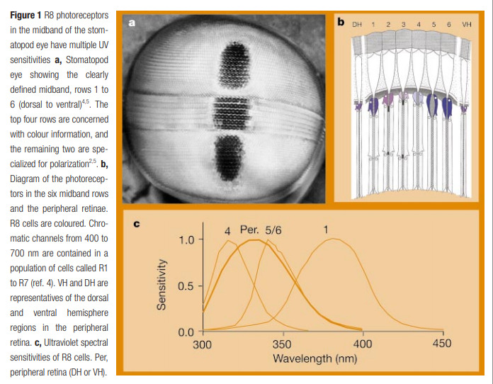

Fatos sobre o Stomatopoda
Odontodactylus scyllarus(Stomatopoda)
- Reino: Animalia
- Filo: Arthropoda
- Subfilo: Crustacea
- Classe: Malacostraca
- Subclasse: Hoplocarida
- Ordem: Stomatopoda

Visão
Por habitarem a poucos metros abaixo d’agua, possuem um amplo campo de visão, sendo sensíveis a enxergar entre os comprimentos de onda que se estendem de 400 a 700nm, possibilitando assim a visão de 10²4 cores.
Soco Potetente
Os estomatópodes, também conhecidos como lagosta-boxeadora. são um dos crustáceos mais agressivos de sua classe e obrigatoriamente carnívoros. Suas características mais marcantes são suas grandes apêndices raptorais que possuem força tamanha capaz de quebrar a casca de um caranguejo com um soco a uma velocidade de 80km/h.
Podem ser classificados em dois tipos de estomatópodes, os “smashers” (esmagadores) e os “spearesr” (lanceiros), se distinguindo dependendo da sua forma principal forma de ataque.
Referẽncias Bibliográficas
Shane T. Ahyong, Phylogenetic Analysis of the Stomatopoda (Malacostraca), Journal of Crustacean Biology, Volume 17, Issue 4, 1 October 1997, Pages 695–715, https://doi.org/10.1163/193724097X00134
https://pt.wikipedia.org/wiki/Stomatopoda